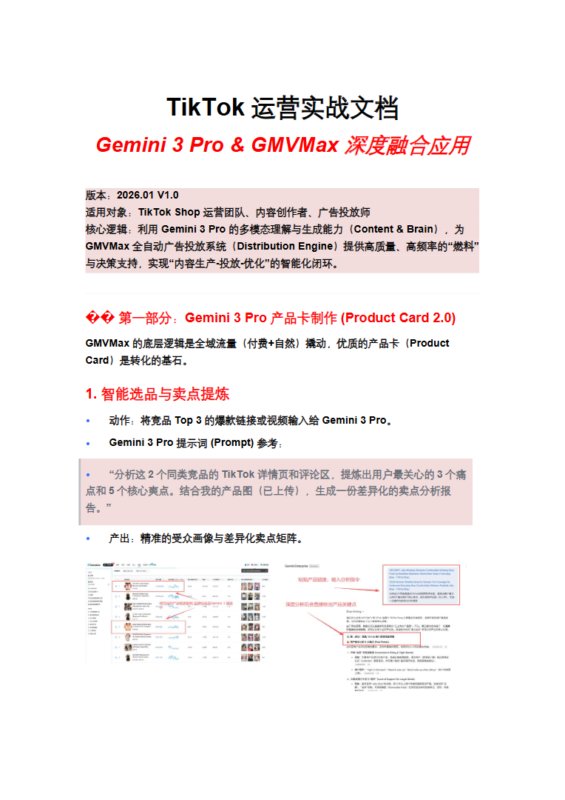
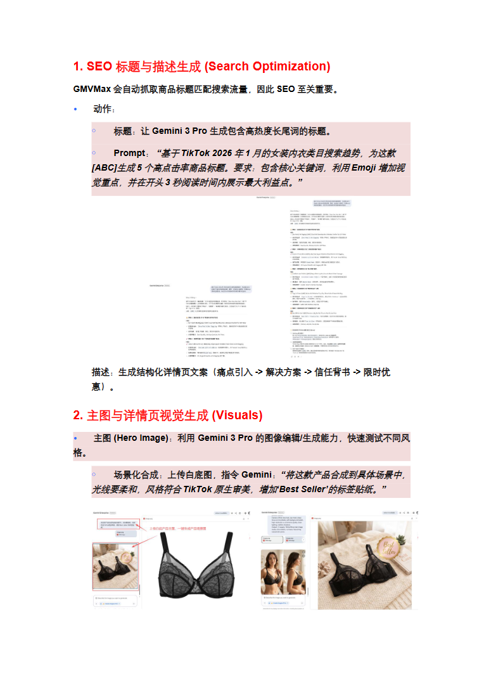
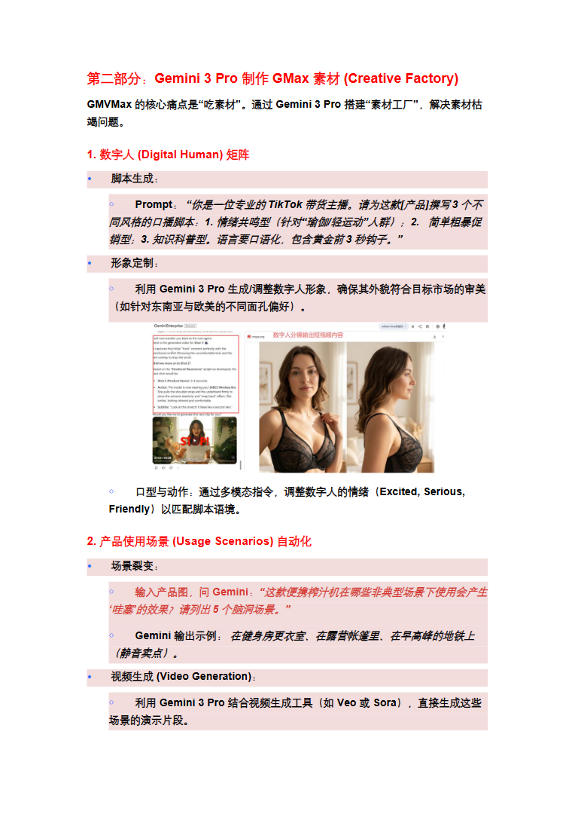
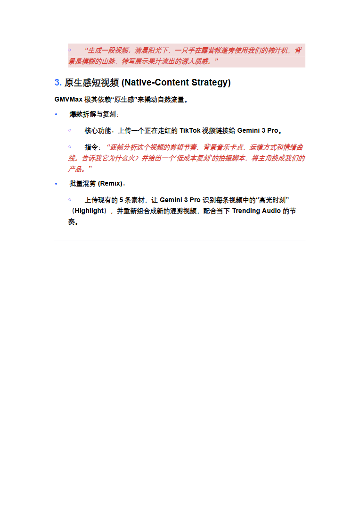
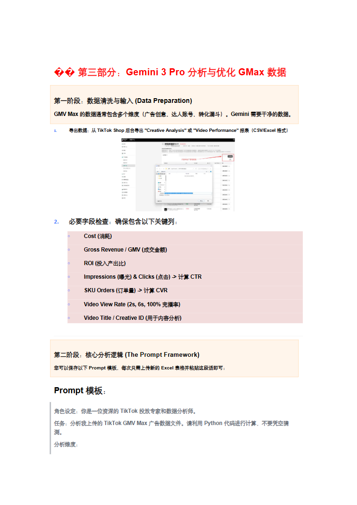
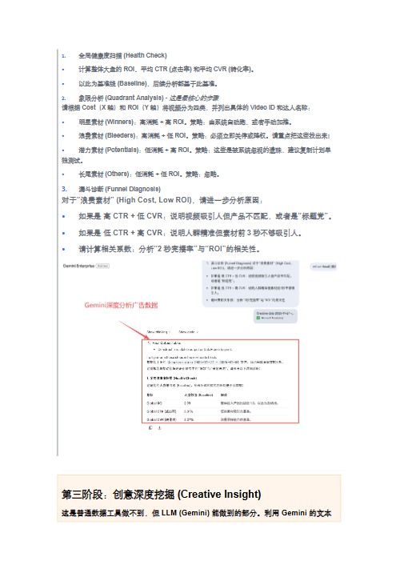
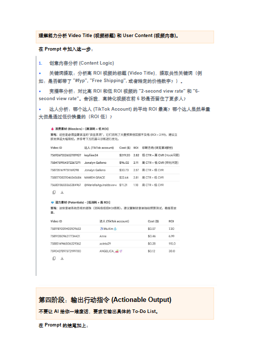
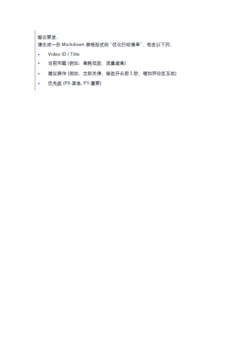
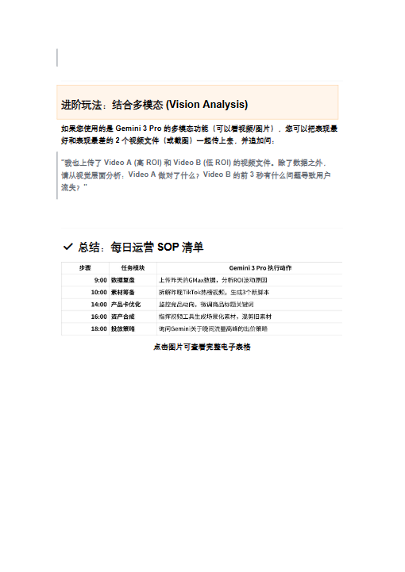

第 1 页

查看文字
TikTok运营实战文档Gemini3Pro&GMVMax深度融合应用版本：2026.01V1.0适用对象：TikTokShop运营团队、内容创作者、广告投放师核心逻辑：利用Gemini3Pro的多模态理解与生成能力（Content&Brain），为GMVMax全自动广告投放系统（DistributionEngine）提供高质量、高频率的“燃料”与决策支持，实现“内容生产-投放-优化”的智能化闭环。��第一部分：Gemini3Pro产品卡制作(ProductCard2.0)GMVMax的底层逻辑是全域流量（付费+自然）撬动，优质的产品卡（ProductCard）是转化的基石。1.智能选品与卖点提炼•动作：将竞品Top3的爆款链接或视频输入给Gemini3Pro。•Gemini3Pro提示词(Prompt)参考：•“分析这2个同类竞品的TikTok详情页和评论区，提炼出用户最关心的3个痛点和5个核心爽点。结合我的产品图（已上传），生成一份差异化的卖点分析报告。”•产出：精准的受众画像与差异化卖点矩阵。
第 3 页

查看文字
1.SEO标题与描述生成(SearchOptimization)GMVMax会自动抓取商品标题匹配搜索流量，因此SEO至关重要。•动作：￮标题：让Gemini3Pro生成包含高热度长尾词的标题。￮Prompt：“基于TikTok2026年1月的女装内衣类目搜索趋势，为这款[ABC]生成5个高点击率商品标题。要求：包含核心关键词，利用Emoji增加视觉重点，并在开头3秒阅读时间内展示最大利益点。”描述：生成结构化详情页文案（痛点引入->解决方案->信任背书->限时优惠）。2.主图与详情页视觉生成(Visuals)•主图(HeroImage)：利用Gemini3Pro的图像编辑/生成能力，快速测试不同风格。￮场景化合成：上传白底图，指令Gemini：“将这款产品合成到具体场景中，光线要柔和，风格符合TikTok原生审美，增加‘BestSeller’的标签贴纸。”
第 4 页

查看文字
第二部分：Gemini3Pro制作GMax素材(CreativeFactory)GMVMax的核心痛点是“吃素材”。通过Gemini3Pro搭建“素材工厂”，解决素材枯竭问题。1.数字人(DigitalHuman)矩阵•脚本生成：￮Prompt：“你是一位专业的TikTok带货主播。请为这款[产品]撰写3个不同风格的口播脚本：1.情绪共鸣型（针对“瑜伽/轻运动”人群）；2.简单粗暴促销型；3.知识科普型。语言要口语化，包含黄金前3秒钩子。”•形象定制：￮利用Gemini3Pro生成/调整数字人形象，确保其外貌符合目标市场的审美（如针对东南亚与欧美的不同面孔偏好）。￮口型与动作：通过多模态指令，调整数字人的情绪（Excited,Serious,Friendly）以匹配脚本语境。2.产品使用场景(UsageScenarios)自动化•场景裂变：￮输入产品图，问Gemini：“这款便携榨汁机在哪些非典型场景下使用会产生‘哇塞’的效果？请列出5个脑洞场景。”￮Gemini输出示例：在健身房更衣室、在露营帐篷里、在早高峰的地铁上（静音卖点）。•视频生成(VideoGeneration)：￮利用Gemini3Pro结合视频生成工具（如Veo或Sora），直接生成这些场景的演示片段。
第 5 页

查看文字
￮“生成一段视频：清晨阳光下，一只手在露营帐篷旁使用我们的榨汁机，背景是模糊的山脉，特写展示果汁流出的诱人质感。”3.原生感短视频(Native-ContentStrategy)GMVMax极其依赖“原生感”来撬动自然流量。•爆款拆解与复刻：￮核心功能：上传一个正在走红的TikTok视频链接给Gemini3Pro。￮指令：“逐帧分析这个视频的剪辑节奏、背景音乐卡点、运镜方式和情绪曲线。告诉我它为什么火？并给出一个‘低成本复刻’的拍摄脚本，将主角换成我们的产品。”•批量混剪(Remix)：￮上传现有的5条素材，让Gemini3Pro识别每条视频中的“高光时刻”（Highlight），并重新组合成新的混剪视频，配合当下TrendingAudio的节奏。
第 6 页

查看文字
��第三部分：Gemini3Pro分析与优化GMax数据第一阶段：数据清洗与输入(DataPreparation)GMVMax的数据通常包含多个维度（广告创意、达人账号、转化漏斗）。Gemini需要干净的数据。1.导出数据：从TikTokShop后台导出"CreativeAnalysis"或"VideoPerformance"报表（CSV/Excel格式）2.必要字段检查：确保包含以下关键列：￮Cost(消耗)￮GrossRevenue/GMV(成交金额)￮ROI(投入产出比)￮Impressions(曝光)&Clicks(点击)->计算CTR￮SKUOrders(订单量)->计算CVR￮VideoViewRate(2s,6s,100%完播率)￮VideoTitle/CreativeID(用于内容分析)第二阶段：核心分析逻辑(ThePromptFramework)您可以保存以下Prompt模板，每次只需上传新的Excel表格并粘贴这段话即可：Prompt模板：角色设定：你是一位资深的TikTok投放专家和数据分析师。任务：分析我上传的TikTokGMVMax广告数据文件。请利用Python代码进行计算，不要凭空猜测。分析维度：
第 7 页

查看文字
1.全局健康度扫描(HealthCheck)•计算整体大盘的ROI、平均CTR(点击率)和平均CVR(转化率)。•以此为基准线(Baseline)，后续分析都基于此基准。2.象限分析(QuadrantAnalysis)-这是最核心的步骤请根据Cost（X轴）和ROI（Y轴）将视频分为四类，并列出具体的VideoID和达人名称：•明星素材(Winners)：高消耗+高ROI。策略：由系统自动跑，或者手动加推。•浪费素材(Bleeders)：高消耗+低ROI。策略：必须立即关停或降权。请重点把这些找出来！•潜力素材(Potentials)：低消耗+高ROI。策略：这些是被系统忽视的遗珠，建议复制计划单独测试。•长尾素材(Others)：低消耗+低ROI。策略：忽略。3.漏斗诊断(FunnelDiagnosis)对于“浪费素材”(HighCost,LowROI)，请进一步分析原因：•如果是高CTR+低CVR：说明视频吸引人但产品不匹配，或者是“标题党”。•如果是低CTR+高CVR：说明人群精准但素材前3秒不够吸引人。•请计算相关系数：分析“2秒完播率”与“ROI”的相关性。第三阶段：创意深度挖掘(CreativeInsight)这是普通数据工具做不到，但LLM(Gemini)能做到的部分。利用Gemini的文本
第 8 页

查看文字
理解能力分析VideoTitle(视频标题)和UserContent(视频内容)。在Prompt中加入这一步：1.创意内容分析(ContentLogic)•关键词提取：分析高ROI视频的标题(VideoTitle)，提取共性关键词（例如：是否都带了"#fyp","FreeShipping",或者特定的价格数字？）。•完播率分析：对比高ROI和低ROI视频的"2-secondviewrate"和"6-secondviewrate"。告诉我，高转化视频在前6秒是否留住了更多人？•达人分析：哪个达人(TikTokAccount)的平均ROI最高？哪个达人虽然单量大但是通过低价换量的（ROI低）？第四阶段：输出行动指令(ActionableOutput)不要让AI给你一堆废话，要求它输出具体的To-DoList。在Prompt的结尾加上：
第 9 页

查看文字
输出要求：请生成一份Markdown表格形式的“优化行动清单”，包含以下列：•VideoID/Title•当前问题(例如：高耗低效、流量虚高)•建议操作(例如：立即关停、修改开头前3秒、增加评论区互动)•优先级(P0-紧急,P1-重要)
第 11 页

查看文字
进阶玩法：结合多模态(VisionAnalysis)如果您使用的是Gemini3Pro的多模态功能（可以看视频/图片），您可以把表现最好和表现最差的2个视频文件（或截图）一起传上去，并追加问："我也上传了VideoA(高ROI)和VideoB(低ROI)的视频文件。除了数据之外，请从视觉层面分析：VideoA做对了什么？VideoB的前3秒有什么问题导致用户流失？"✅总结：每日运营SOP清单点击图片可查看完整电子表格